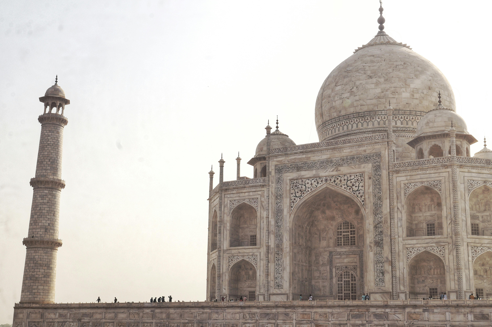
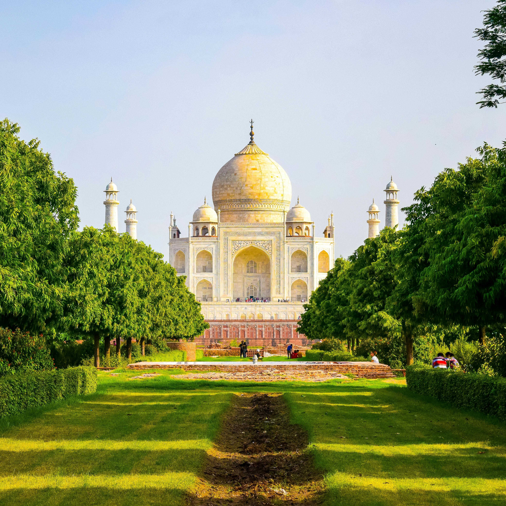

Discover the Wonder

Architecture
A Symphony in Marble
Built between 1632 and 1653,The Taj Mahal Stands as the pinncacle of Mughal Architecture, a seamless blend of persian,ottoman and indian craftmanship, its perfectly Symmetrical facade,adorned with intricate inlaid gemstones and calligraphy took over 20,000 artisans more than two decades to complete

Legacy
Love cast in Stone
Emperor Shajahan commissioned this ivory-white mausoleum as an eternal Tribute to his beloved wife Mumtaz,Who passes away in 1631. Recognised as a UNESCO World Heritage site and one of the Seven Wonders of the World it draws million of visitors each year,all moved by the same timeless story
✦ ✦ ✦